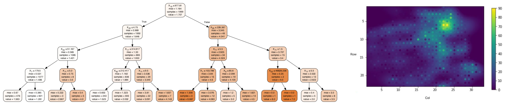

Prediction of Gas Leaks in San Francisco
Gas leak is a crucial risk problem in urban life. In this study, we cleaned and aggregated SF fire incident records of 17 years using Python; performed spatial join using QGIS; created heat maps to visualize incident density and patterns using Matplotlib. We used Decision Tree and Random Forest to predict gas leak incidents and examine the influences of weather, geographical and multiple socioeconomic factors. We are able to identify important social-economic variables that affect the prediction of gas leak. Since the gas leak incidents are highly correlated over space and time, we included Gaussian Process methods to learn this dependence structure. We built two models using Gaussian Process to identify grid cells where gas leak incidents occur more frequently and the future trend of monthly gas leak emergencies. The methods in this study to foresee emergencies are informative and can facilitate the management of city agencies like fire department.
My work focused on creating shapefile of fishnet grids, building decision tree model and Gaussian Process model.
Methods: Data Analysis (Python NumPy, Pandas, scikit-learn), Spatial Analysis (Geopandas, QGIS), Visualization (Matplotlib).